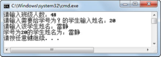

5.5 操作动态数组
Java在创建数组的时候，需要指定数组长度，且数组长度不可变。而java.lang.reflect包下提供了一个Array类，这个类中包括一系列static方法，通过这些方法可以创建动态数组，对数组元素进行赋值、取值操作。
Array类提供的主要方法（均为静态方法）如下。
- Object newInstance(Class componentType, int length)
创建一个具有指定元素类型和长度的新数组。
- Object newInstance(Class componentType, int... dimensions)
创建一个具有指定元素类型和维度的多维数组。
- void setXxx(Object array, int index,xxx val)
将指定数组对象中索引元素的值设置为指定的xxx类型的val值。
- xxx getXxx(Object array, int index)
获取数组对象中指定索引元素的xxx类型的值。
5.5.1 操作一维动态数组
假设有这样的需求，每个班需要用一个字符串数组来存该班所有学生的姓名，但每个班的学生人数不一样，需要每个班的班主任在开学前统计该班班级人数后填入系统中，才能确定这个数组的长度，这就需要使用动态数组，并且需要根据指定学号输入学生姓名，添入数组中，具体代码如下：
import java.util.Scanner;
import java.lang.reflect.*;
public class TestArray{
public static void main(String args[]) {
try {
Scanner input = new Scanner(System.in);
Class c = Class.forName("java.lang.String");
System.out.print("请输入班级人数：");
int stuNum = input.nextInt();
//创建长度为stuNum的字符串数组
Object arr = Array.newInstance(c,stuNum);
System.out.print("请输入需要给学号为？的学生输入姓名：");
int stuNo = input.nextInt();
System.out.print("请输入该学生姓名：");
String stuName = input.next();
//使用Array类的set方法给数组赋值
Array.set(arr, (stuNo-1), stuName);
//使用Array类get方法获取元素的值
System.out.println("学号为" + stuNo + "的学生姓名为：" + Array.get(arr,(stuNo-1)));
} catch (Exception e) {
e.printStackTrace();
}
}
}
编译、运行程序，运行结果如图5.14所示。

图5.14 使用Array类创建动态数组
5.5.2 操作多维动态数组
使用Array类创建一个多维动态数组的方法为newInstance(Class componentType, int... dimensions)，其中dimensions参数是表示新建数组维度的int数组。例如，想创建一个三维数组，维度分别为8、10、12，则需要定义一个长度为3的整型数组（int[] d = {8,10,12}），再通过这个整型数组创建三维数组。
下面的代码创建了一个8×10二维整型动态数组，并给数组下标为[4][6]的数组元素赋值为20，具体代码如下：
import java.lang.reflect.*;
public class TestArray2{
public static void main(String args[]) {
try {
Class c = Integer.TYPE;
//创建一个8×10二维整型数组
int dim[] = {8,10};
Object arr = Array.newInstance(c,dim);
//arr4为一维数组
Object arr4 = Array.get(arr,4);
//给arr[4][6]赋值为20
Array.set(arr4, 6, 20);
//获取arr[4][6]的值
System.out.println("arr[4][6]的值为：" + Array.get(arr4,6));
} catch (Exception e) {
e.printStackTrace();
}
}
}
在介绍数组的时候提到过，二维数组可以先理解为一个一维数组，这个一维的每个数组元素又是一个一维数组。代码中Array.get(arr,4)语句获取下标为4的数组元素arr4，这个数组元素就是一个一维数组，再通过Array.set(arr4, 6, 20)语句设置arr4这个一维数组下标为6的数组元素的值为20，即完成了设置arr[4][6]的值为20的目的。编译、运行程序，输出结果为20。